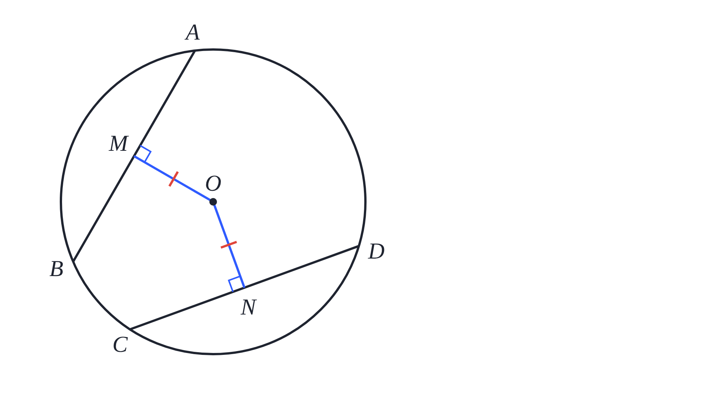
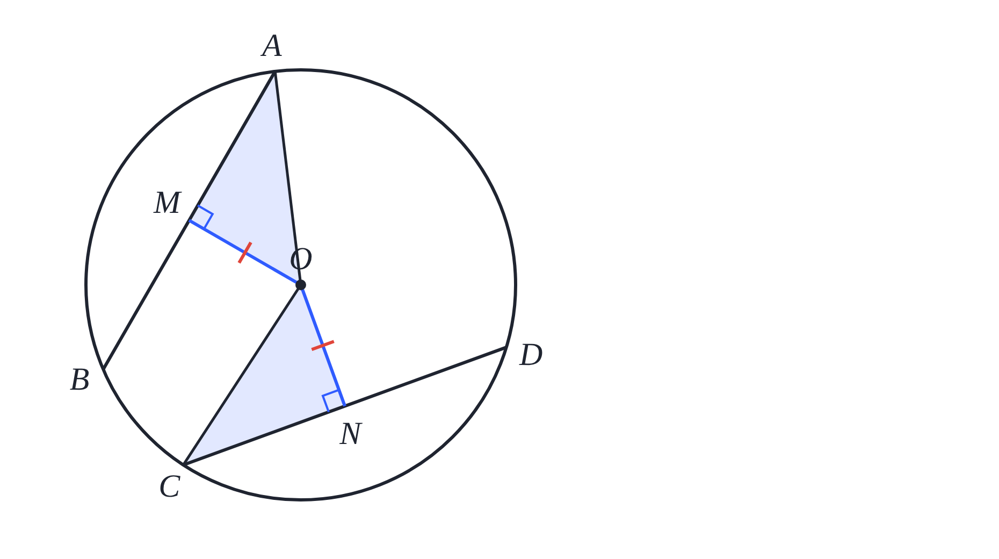
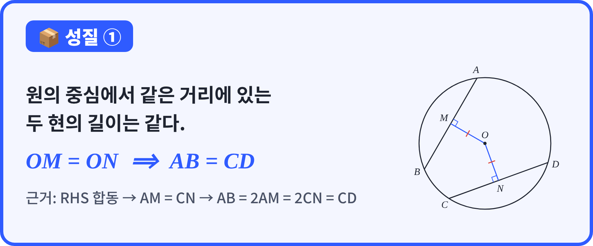
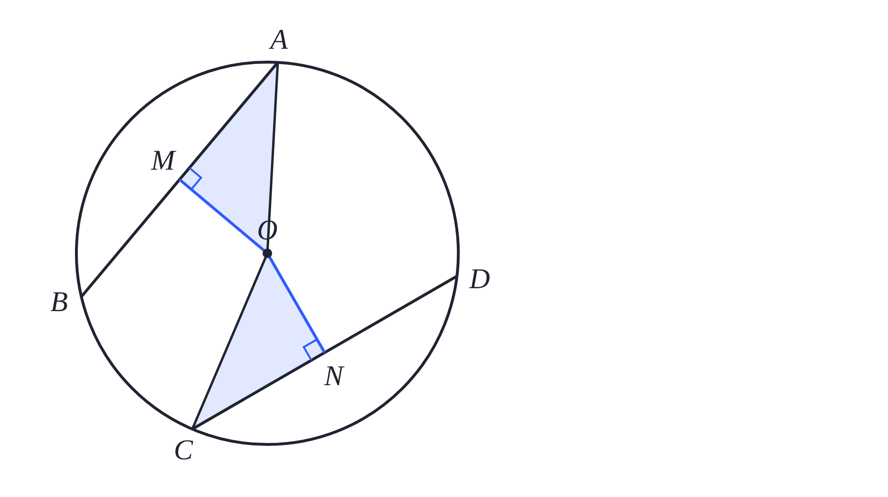
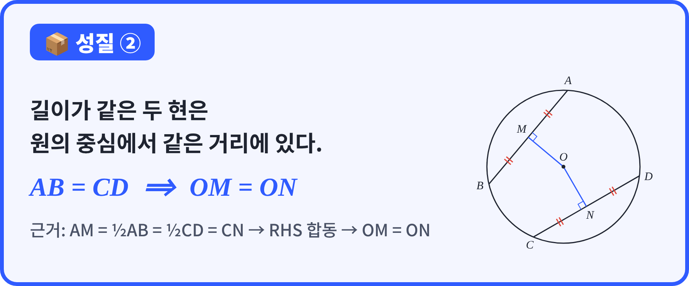
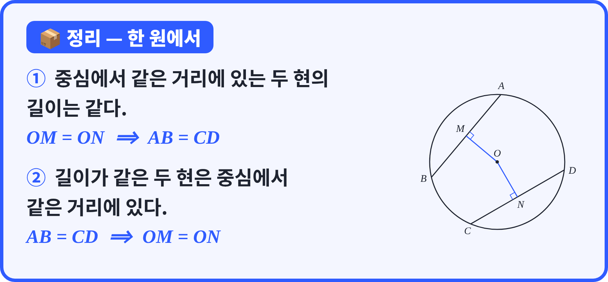

| 번호 | 화면 · 정답 | 주요 발문 | 교사 역할 · 판서 |
|---|---|---|---|
| 1선택 30초 | AB = 12일 때 AM 6 cm |
수선의 발 M은 현 AB의 어디쯤일까? |
공개 화면에서 M에 중점 표시, AM = MB 12·24 고른 학생 → "절반"이 핵심 |
| 2단답 30초 | AM = 7일 때 AB 14 |
이번엔 거꾸로! 절반을 알면 전체는? |
7, 3.5 → 1번과 방향이 반대라는 것 짚기 |
| 3단답 60초역전 | AB = 24, OM = 5 → x(반지름) 13 |
그림 속 직각삼각형을 찾아볼까? 빗변은 어느 선이지? |
△OAM 색칠, 빗변 = 반지름 OA 표시 24를 반으로 안 나눔(√601) → AM = 12부터 시작 |
| 4단답 60초 | 반지름 10, 거리 6 → x(현) 16 |
이번엔 현을 구한다. 무엇부터 구해야 할까? |
"절반 먼저 → 마지막에 ×2" 두 단계 적기 8 → 2배를 빠뜨림 |
| 번호 | 화면 · 정답 | 주요 발문 | 교사 역할 · 판서 |
|---|---|---|---|
| 5슬라이드 | 오늘의 질문: 거리가 같으면 길이도? 거꾸로는? | 같다고 생각하는 사람 손! 왜 그렇게 생각해요? 그림을 재 보면 확인할 수 있을까? '항상'이라고 말할 수 있을까? |
예측만 받고 판정하지 않기. "증명해서 확인하자"로 연결 |
| 6슬라이드 | 성질 ① 문장  |
그림에서 같다고 표시된 건 어디지? |
OM = ON 빨간 눈금 짚기 → "가정 = 주어진 것" 문장에서 '~이면' 앞에 밑줄(가정), 뒤에 물결(결론) |
| 7선택 30초 | 성질 ①의 가정은? OM = ON |
'~이면' 앞이 가정, 뒤가 결론! |
AB = CD 고른 학생 → 결론과 헷갈림. 우리가 '보여야 할 것'이 결론 |
| 8슬라이드 | 증명 ① 반지름 OA, OC 긋기  |
아까 전시학습처럼 직각삼각형을 만들려면 어떤 선을 하나 더 그으면 될까? |
학생 답을 먼저 받고 나서 화면 보여 주기 OA, OC 덧그리기 → 파란 삼각형 두 개 강조 |
| 9선택 30초 | OA = OC인 이유 원의 반지름 |
OA와 OC는 원에서 어떤 선이지? |
OA, OC 옆에 'H(빗변)' 적기 '공통인 변' → 공통변은 두 삼각형이 함께 쓰는 한 변 |
| 번호 | 화면 · 정답 | 주요 발문 | 교사 역할 · 판서 |
|---|---|---|---|
| 10슬라이드 | 증명 ② 세 조건 나열 | 같은 것 세 개를 찾았어요. 각각 각이에요, 변이에요? |
∠OMA = ∠ONC = 90° 옆에 R, OA = OC 옆에 H, OM = ON 옆에 S |
| 11단답 30초2배 | 합동 조건은? RHS |
직각, 빗변, 그리고 한 변 — 무슨 합동? |
2배 라운드라고 미리 알려 긴장감 주기 SAS → 끼인각이 아님 · RHA → 같은 건 각이 아니라 변(OM = ON) |
| 12슬라이드 | 증명 ③ AM = CN, AB = 2AM | 두 삼각형이 합동이면 또 무엇이 같아질까? AM이 같다는 걸 알았는데, 우리가 원하는 건 AB잖아. 어떻게 하지? |
AM, CN에 같은 표시 → "×2" |
| 13선택 30초 | AB = 2AM인 근거 수선은 현을 이등분 |
이거 아까 어디서 봤죠? (전시학습 1번!) |
전시학습 1번 화면을 떠올리게 하기 'RHS 합동' 고른 학생 → 합동은 AM = CN까지만 알려 줌 |
| 14슬라이드 | 📦 성질 ① 결론 박스  |
다 같이 읽어 볼까요? |
회색 근거 줄을 손으로 짚으며 3단계 요약: RHS 합동 → AM = CN → 2배 |
| 번호 | 화면 · 정답 | 주요 발문 | 교사 역할 · 판서 |
|---|---|---|---|
| 15슬라이드 | 성질 ② (①의 역)  |
①과 비교해서 뭐가 바뀌었죠? 이번 가정은 AB = CD. 그러면 현의 절반끼리는? |
①·② 가정/결론을 나란히 쓰고 화살표로 바뀐 것 표시 16번 공개 뒤 AM·MB·CN·ND에 같은 눈금(〃) 판서 "이번엔 여러분이 증명!" |
| 16OX 20초 | AM = ½AB = ½CD = CN O |
①에서 S는 OM = ON이었죠. ②에서 S는? |
S 자리에 AM = CN 적기 (①의 판서와 비교) |
| 17순서 60초역전 | 증명 4단계 순서 배열 절반 → 직각·빗변 → 합동 → OM = ON |
①의 증명 순서를 떠올리면서 놓아 보세요. |
역전 라운드 안내(아래 절반이 맞히면 ×2) 공개 후 4단계를 칠판에 순서대로 정리 |
| 18슬라이드 | 📦 성질 ② 결론 박스  |
다 같이 읽어 볼까요? |
회색 근거 줄 짚기: AM = CN → RHS 합동 → OM = ON |
| 19슬라이드 | 📦 성질 ①·② 정리  |
두 식에서 달라진 건 뭐죠? (화살표 방향) |
⟹ 두 개를 ⟺ 하나로 묶어 보이기 → "서로 역, 둘 다 참" |
| 20설문 20초 | 짝에게 설명할 수 있나요? | 솔직하게 눌러 주세요. 점수 없어요. |
결과 보고 결정 '합동 헷갈림'이 많으면 → 10~11번 판서로 2분 다시 짚기 그렇지 않으면 → 정리학습으로 |
| 단계 | 주요 발문 · 교사 역할 |
|---|---|
| 시작 | 풀이는 공책에, 답은 태블릿에! 답은 단위 없이 숫자만. 공책 풀이를 하는 동안 순회하며 막힌 학생에게 "성질 ①이야, ②야?"만 묻기 |
| 문항마다 | 이 문제는 성질 ①, ② 중 무엇을 쓰지? 그다음엔 무엇을 구하지? 공개 화면의 오답 분포에서 가장 많은 오답 하나를 골라 "어디서 갈렸을까?" 판서 |
| 심화2배 | 2배 라운드 안내. 막히면 해설의 첫 단계만 힌트로 말해 주기 (예: "사각형의 내각의 합은?") |
| 마지막베팅 | 지금 점수의 0·25·50·100% 중에서 자신 있는 만큼만 걸어요. 안 걸어도 괜찮아요. 베팅 화면에서 시간을 충분히 주기 |
| 마무리 | 시상대 → 별 지급 안내(참여 +1, 3등 이내 +1) 오늘 두 성질을 한 문장으로 말해 볼 사람? |
| 문항 | 문제 메모 (정답 · 예상 오답 · 힌트) |
|---|---|
| 21 | |
| 22 | |
| 23 | |
| 24 | |
| 25 |